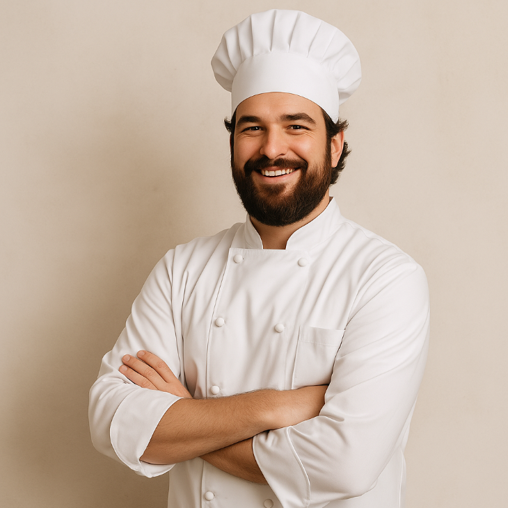
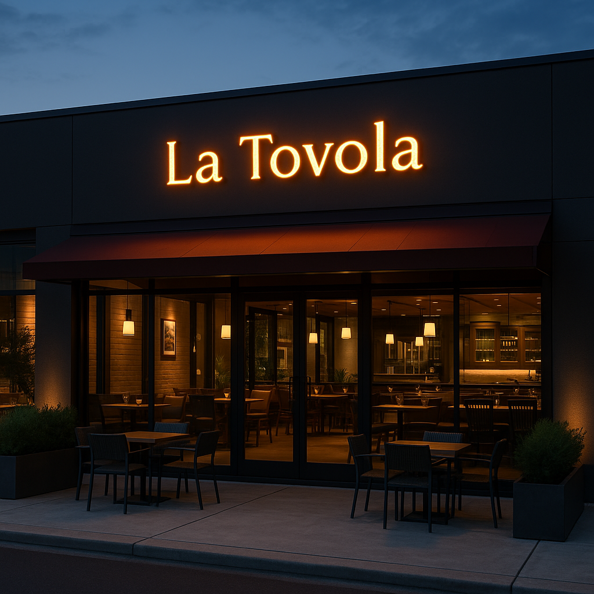

O La Tovola nasceu do sonho de uma família ítalo-brasileira apaixonada pela arte de cozinhar e acolher. Inspirado nas longas refeições em família, recheadas de risos, aromas marcantes e histórias passadas de geração em geração, o restaurante foi fundado com a missão de trazer ao Brasil uma experiência genuinamente italiana onde cada prato conta uma história, e cada cliente é recebido como um velho amigo.
Desde sua inauguração, o La Tovola tem sido um ponto de encontro para os amantes da boa gastronomia. Nossa cozinha une tradição e inovação, respeitando as receitas clássicas da nonna, mas sempre buscando toques contemporâneos que surpreendem o paladar. Os ingredientes são selecionados com rigor,valorizando produtores locais e importando itens especiais diretamente da Itália, garantindo autenticidade e frescor em cada detalhe.
Mais do que um restaurante, o La Tovola é um espaço onde a paixão pela culinária se encontra com o carinho no atendimento e o desejo de criar memórias inesquecíveis. Seja em um jantar a dois, uma celebração em família ou um almoço de negócios, cada visita é uma viagem sensorial à Itália sem sair do Brasil.

Investir em uma franquia do La Tovola é uma excelente oportunidade, pois permite que os empreendedores se beneficiem de uma marca já consolidada e de um modelo de negócios testado e comprovado. Ao escolher esse caminho, o investidor tem acesso a um plano bem estruturado, treinamento especializado e suporte contínuo, o que facilita a gestão do negócio. Além disso, com um restaurante que já tem uma clientela fiel e um cardápio que agrada, o franqueado tem maiores chances de sucesso e rentabilidade, reduzindo riscos e aproveitando o potencial de crescimento da marca. É uma escolha estratégica para quem busca um investimento seguro e com bom retorno. Clique no botão abaixo para ser um franquado hoje mesmo!
